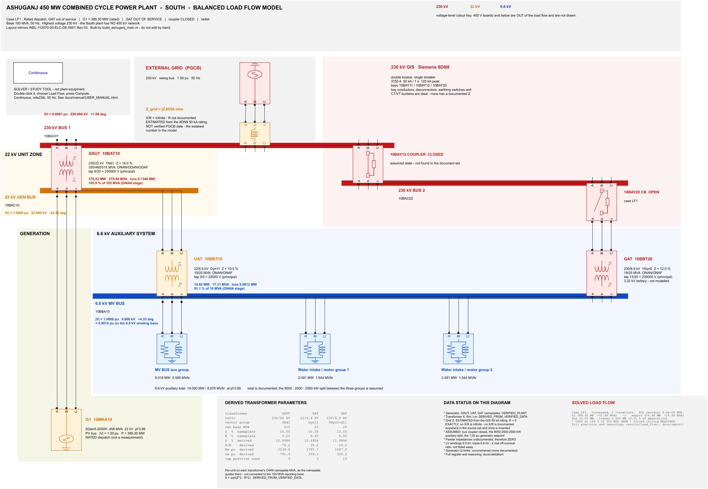
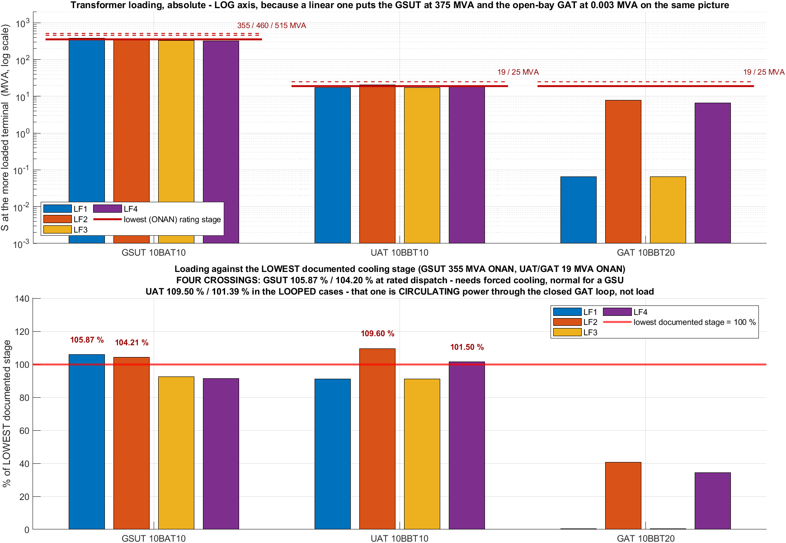
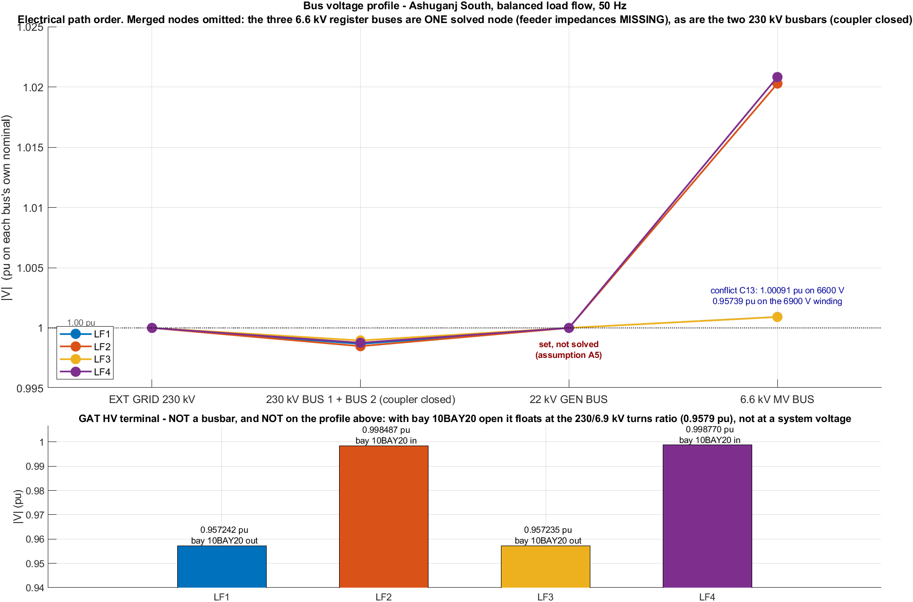

The model is a Simulink / Simscape Electrical model solved by the Specialized Power Systems load flow engine. It is entirely offline: no internet, no licence server beyond MATLAB itself, no extra toolboxes, no data files to download.
| What you need | Status on the machine that generated this page |
|---|---|
| MATLAB | 24.1.0.2537033 (R2024a) |
| Platform | PCWIN64 |
| Simulink | present (sim resolves) |
| Simscape Electrical (Specialized Power Systems) | present (powergui resolves) |
| The load flow engine | present (power_loadflow resolves) |
F:\LOCAL DISK E\idm\compressed\ Level 3 Term 1\306 Power Project
If that path contains a space — this one does — it must be quoted when you type it at a Windows or Git-Bash prompt. Inside MATLAB, quote it as a string and it is fine. Nothing in the project stores this path: every script finds the root from its own location, so the folder can be moved or copied anywhere. See §10.
One rule. The project folders are not on the MATLAB path when MATLAB starts. Something has to put them there, once per session. Every route in this manual does it for you — that is the reason the entry points exist. If you ever see Unrecognized function or variable, that step was skipped.
RUN_ME.m sits in the project root, next to the folders, where somebody who has never seen the project will find it. Make the project root the current folder in MATLAB and type:
RUN_ME
That solves all four operating cases from the dataset, redraws every figure, and regenerates this manual and the project update. It takes a few minutes. It overwrites the contents of results/ and docs/manual/ and nothing else — the dataset and the source models are inputs and are never rewritten by a run.
| Command | What it does |
|---|---|
RUN_ME | solve the four cases, redraw the figures, regenerate all three documents |
RUN_ME check | report MATLAB version, toolboxes, what is already on disk, and whether results/ can be written. Changes nothing — run this first on a new PC |
RUN_ME open | open simulink/main/Ashuganj_South_Main.slx ready to present |
RUN_ME solve | solve the four cases only |
RUN_ME figures | redraw the plots and the annotated diagrams only |
RUN_ME docs | regenerate this manual, the project update and the lab report from the results already on disk |
RUN_ME tests | run the validation suite |
RUN_ME setup | put the project folders on the MATLAB path and stop |
Inside MATLAB, once the path is set, ashuganj is the same command with the same arguments — RUN_ME is a wrapper around it that also fixes the path first. Use whichever you remember.
Use this route when you want to see each stage separately, or when one stage failed and you want to repeat only that stage. It is exactly what RUN_ME does, typed out.
cd 'F:\LOCAL DISK E\idm\compressed\ Level 3 Term 1\306 Power Project'
addpath('matlab'); ashuganj_setup;
run_load_flow_study % solve the four cases
make_load_flow_plots % four PNGs
make_annotated_diagrams % four annotated single-line sheets
build_project_update % PROJECT_UPDATE.html
build_user_manual % USER_MANUAL.html (this page)
| Step | What it does | What it leaves behind |
|---|---|---|
ashuganj_setup | Puts every project folder on the MATLAB path and creates any output folder that is missing. Must run once per MATLAB session, before anything else. | nothing on disk except the empty output folders it creates |
run_load_flow_study | Builds a fresh Simulink model for each of the four cases from the dataset, solves each one, rebuilds every branch flow independently of the solver, and cross-checks the two against each other at every bus. | 6 CSV tables and 4 powergui reports in results/load_flow/, 9 models in simulink/studies/ |
make_load_flow_plots | Draws the voltage profile, the power balance, and the transformer and line loading, for all four cases on one axis each. | 4 PNGs in results/plots/ |
make_annotated_diagrams | Writes the solved numbers onto a copy of the single-line diagram, one sheet per case, so a reader sees the flows on the drawing instead of in a table. | 4 PNGs in results/diagrams/ and the matching annotated models |
build_project_update | Writes the presentation document: what the model is, what was found, what is assumed, what remains. | docs/manual/PROJECT_UPDATE.html |
build_user_manual | Writes this page. | docs/manual/USER_MANUAL.html and index.html |
Optional, and the slowest step. It checks the dataset against itself and the solved network against the dataset — that impedances convert correctly between bases, that the transformer phase shifts have the right sign, that no bus is left floating, and that the answers do not move when the two weakest inputs are perturbed.
run_all_tests
There are 10 test files in matlab/tests/. Run this after changing any parameter, and before quoting a number to anybody.
The diagram in simulink/main/Ashuganj_South_Main.slx is laid out to be read, and it solves on its own — it is case LF1. So the live demonstration runs on the readable drawing, not on a generated study model. Its solution was compared against the generated LF1 model and agrees on every node.
RUN_ME open
Or from the Current Folder browser: simulink → main → double-click Ashuganj_South_Main.slx. The path is not set up if you do it that way, which is fine for showing the diagram but not for running any script.
G1, 22 kV GEN BUS, GSUT 10BAT10, 230 kV BUS 1 and BUS 2, UAT 10BBT10, 6.6 kV MV BUS, GAT 10BBT20, EXT GRID.powergui, top left. Show the two fields that matter: Simulation type is Continuous (a phasor solution, not a discretised one) and Frequency is 50 Hz. Show the frequency deliberately — see §5.powerLoadFlow % takes no arguments - it reads the open model itself
Passing the model name throws MATLAB:TooManyInputs. Type it bare.
Compute, then Report. It solves in 2 iterations. The report that appears is the same content as results/load_flow/LF1_powergui_report.rep, which is already on disk if the projector lets you down.Add bus blocks. It inserts unwired placeholder blocks, and the next solve then fails with "is not properly connected to the network". If you press it by accident: undo, and close the model without saving.The main diagram is the rated case with the station auxiliary bay open. For the other three, open the matching study model instead — everything above applies unchanged.
open('simulink/studies/Load_Flow_LF2.slx') % rated, station bay CLOSED
open('simulink/studies/Load_Flow_LF3.slx') % derated, bay open
open('simulink/studies/Load_Flow_LF4.slx') % derated, bay closed
The annotated sheets carry the solved numbers on the drawing itself. They are PNGs: they open on any machine, with or without MATLAB, and they are the safest thing to put on a projector.

results/diagrams/.Three things in the Load Flow Analyzer window look like mistakes and are not. Say each of them before somebody in the audience spots it.
*1* to *5*The tool numbers the nodes itself and does not know the plant's names. The mapping below was derived from the report the tool wrote for case LF1, matched against bus_results.csv on three things the tool prints for itself: base voltage, bus type, and solved voltage. It is re-derived every time this page is generated, because the numbering is the solver's and it changes if the network does.
| Tool ID | It is | Base | Type | V on screen | V in the tables |
|---|---|---|---|---|---|
| *1* | GAT_HV | 230 kV | PQ | 0.957 pu | 0.957242 |
| *2* | B6_6 — 6.6 kV MV BUS | 6.6 kV | PQ | 1.001 pu | 1.000911 |
| *3* | B22 — 22 kV GEN BUS | 22 kV | PV | 1.000 pu | 1.000000 |
| *4* | BGRID230 — EXT GRID 230 kV | 230 kV | swing | 1.000 pu | 1.000000 |
| *5* | B230_1 — 230 kV BUS 1 + BUS 2 (coupler closed) | 230 kV | PQ | 0.999 pu | 0.998672 |
The rule to use on stage, not the table: there is exactly one swing bus and that is the grid, and exactly one PV bus and that is the generator. Find those two and the rest follow from the base voltage. Never identify a bus by its index — the index is the solver's and is not stable.
Why 8 buses become 5 nodes. A closed breaker and a zero-impedance connection are not branches to a load flow — they are identities. The three 6.6 kV load nodes are one node because the feeder impedances between them are not in the document set, and the two 230 kV busbars are one node because the coupler is closed. The CSV keeps all 8 rows so nothing looks overlooked, but only the first bus of each group carries the solver's injection; the other 3 name the bus they merged into and report no injection of their own. Otherwise a reader could add the column up and find three times the auxiliary load the plant has.
60 in the powergui dialogIt is the FFT scope's default frequency, not the system frequency. The mask's own label for that field reads Fundamental (PSBFFTSCOPE) — it names the scope in its own prompt. The system frequency is the Frequency field, and it is 50 Hz; the solved frequency is written into every results table as f_Hz = 50.
Mention this before anybody asks. A previous study of this same plant, in CYME PSAF, was actually built at 60 Hz — that is logged as one of its defects. An examiner who spots a stray 60 on your screen will reasonably suspect the same mistake, and the answer is one sentence long if you get there first.
The tool's own summary block for case LF1 reads 14.82 MW of total generation on a plant dispatching 389.30 MW. It is right. The summary nets all generation, and the grid is a generator too — a negative one, because it is absorbing the export:
G1 +389.30 MW
swing bus (grid) -374.48 MW the grid absorbs the export
----------
total +14.82 MW = 14.000 MW auxiliary load + 0.816 MW losses
389.3000 − 374.4835 = 14.8165 MW, and 14.000 + 0.8165 = 14.8165 MW. It is an exact identity, and it is a good moment in a presentation: the wrong-looking number is the auxiliary load plus the losses, and it proves the balance closes.
And quote the total loss, not the tool's loss line. The same block reports Total losses 0.62 MW and Total Zshunt load 0.19 MW separately: the first is the series copper loss, the second is the iron and magnetising loss. Together they are 0.81 MW, which is the 0.8165 MW that system_summary.csv reports as the loss for this case.
Report read from LF1_powergui_report.rep, which records convergence in 2 iterations.
Two questions had no single answer in the source documents, so both were kept: how much the unit is dispatching, and whether the station auxiliary transformer bay is closed. Two choices each gives four cases, and all four are solved and reported rather than one being picked.
| Case | What it is | Generated MW | Exported MW | Losses MW | 230 kV pu | Iter |
|---|---|---|---|---|---|---|
| LF1 | Rated dispatch, GAT out of service | 389.30 | 374.48 | 0.816 | 0.99867 | 2 |
| LF2 | Rated dispatch, GAT in service | 389.30 | 374.47 | 0.833 | 0.99848 | 2 |
| LF3 | Site-derated dispatch, GAT out of service | 342.01 | 327.33 | 0.680 | 0.99896 | 2 |
| LF4 | Site-derated dispatch, GAT in service | 342.01 | 327.32 | 0.690 | 0.99877 | 2 |
Every case carries the same auxiliary demand, 14.000 MW at 8.676 MVAr, and the same 100 MVA reporting base.
Loading is reported against every cooling stage, lowest and highest, not just the top one. A transformer quoted only against its forced-cooling rating can look comfortable while being over its natural-cooling nameplate, and that is exactly what happens here.
| Case | Transformer | Lowest stage % | Highest stage % |
|---|---|---|---|
| LF1 | GSUT 10BAT10 | 105.87 | 72.98 |
| LF1 | UAT 10BBT10 | 91.09 | 69.23 |
| LF1 | GAT 10BBT20 | 0.34 | 0.26 |
| LF2 | GSUT 10BAT10 | 104.21 | 71.83 |
| LF2 | UAT 10BBT10 | 109.60 | 83.30 |
| LF2 | GAT 10BBT20 | 40.82 | 31.02 |
| LF3 | GSUT 10BAT10 | 92.49 | 63.75 |
| LF3 | UAT 10BBT10 | 91.09 | 69.23 |
| LF3 | GAT 10BBT20 | 0.35 | 0.26 |
| LF4 | GSUT 10BAT10 | 91.26 | 62.91 |
| LF4 | UAT 10BBT10 | 101.50 | 77.14 |
| LF4 | GAT 10BBT20 | 34.49 | 26.21 |
The figures in red are above the nameplate of the lowest cooling stage. What they mean, and why the unit auxiliary transformer is worst in the closed-bay cases while delivering no extra power, is §8 of PROJECT_UPDATE.html.

Everything a run produces goes under results/ and docs/manual/. Nothing else is written.
| File | What is in it |
|---|---|
results/load_flow/system_summary.csv | One row per case: dispatch, export, losses, the voltage at each level, the flow through each transformer, iterations, and the worst cross-check error. Start here. |
results/load_flow/bus_results.csv | Every bus: type, nominal and base voltage, solved voltage in pu and kV, angle, and the injection the solver reports. Merged buses are marked and carry no injection of their own. |
results/load_flow/transformer_results.csv | Each transformer: vector group, impedance and the rating it is quoted on, flow at both windings, losses, HV current, tap used, and loading against every cooling stage. |
results/load_flow/line_results.csv | Each branch, including the ones that carry no observable flow — those are reported as blank rather than zero, because a blank is the truth and a zero is a measurement. |
results/load_flow/residuals.csv | The cross-check. At each bus, the solver's injection against the sum of the branch flows rebuilt outside the solver. This is the column that says whether to believe the rest. |
results/load_flow/*.rep | The powergui report for each case, as the tool wrote it. This is what the audience sees on screen. |
results/plots/*.png | Voltage profile, power balance, transformer loading, line loading — all four cases per figure. |
results/diagrams/*.png | The single-line diagram with the solved numbers written onto it, one sheet per case. |
docs/manual/PROJECT_UPDATE.html | What the study found and what remains. The document to present. |
docs/manual/LAB_REPORT.html | The same study in the EEE 306 labsheet form: theory, the calculations worked through by hand, the result tables, discussion, report questions, and what to perform next. The document to submit. |
docs/manual/USER_MANUAL.html | This page. |
Each branch's flow is measured at its own From bus, and for the two auxiliary transformers the From bus is the 6.6 kV side. Flow leaving that bus into the branch counts as positive, so a unit auxiliary transformer that is feeding the board — delivering power into the bus — reports a negative number. The sign is not an error and it is not a fault direction: read the From_bus column before reading any sign as physical.

Never edit the Simulink file to change a number. The models are generated from the dataset, so the next run overwrites anything typed into a block dialog, and in the meantime the diagram and the tables disagree without saying so. Change the dataset and rebuild.
matlab/data/ashuganj_buses.m | Bus (node) database - Ashuganj 450 MW CCPP SOUTH. |
matlab/data/ashuganj_generators.m | Generator database - Ashuganj 450 MW CCPP SOUTH. |
matlab/data/ashuganj_grid.m | External grid equivalent - Ashuganj 450 MW CCPP SOUTH. |
matlab/data/ashuganj_lines.m | Line / cable / series-branch database - Ashuganj SOUTH. |
matlab/data/ashuganj_loads.m | Load database - Ashuganj 450 MW CCPP SOUTH. |
matlab/data/ashuganj_master_data.m | Single entry point for the whole Ashuganj SOUTH dataset. |
matlab/data/ashuganj_transformers.m | Transformer database - Ashuganj 450 MW CCPP SOUTH. |
Every value in those files carries where it came from: the document, the page or sheet, and a status — verified from the plant, verified from an engineering document, derived, assumed, estimated, missing or conflicting. Keep that column truthful when you add anything. A number without a source is worse than a gap, because a gap gets filled and a wrong source gets trusted.
There are 5 of them, in matlab/data/assumptions/, never mixed into the verified dataset. Each one records what was assumed, why, and what it affects.
aux_load_allocation_split | APPROVED ASSUMPTION - auxiliary load distribution. |
generator_voltage_setpoint | ASSUMPTION - G1 terminal voltage setpoint. |
gis_bus_coupler_closed | APPROVED ASSUMPTION - 230 kV GIS bus coupler state. |
grid_series_resistance_zero | APPROVED ASSUMPTION - external grid X/R. |
transformer_magnetising_inductance | SUPERSEDED - Lm is now DERIVED, not assumed. |
If you need a value that is not in the documents, add it here as an assumption with its reason — do not put it in the dataset and do not take a textbook figure quietly. §9 of PROJECT_UPDATE.html lists what each assumption is worth in the answers.
simulink/backups/ holds 26 numbered copies. Copy Ashuganj_South_Main.slx to the next free _vNNN.slx before anything else. A working model is not something to lose to a bad afternoon.run_all_tests — the dataset checks catch a value that contradicts another one.run_load_flow_study — solve all four cases again, not just the one you care about.results/load_flow/residuals.csv and look at the worst residual. If it grew, the change broke the agreement between the solver and the independent flow calculation, and the new numbers are not to be quoted yet.RUN_ME docs — regenerate all three documents so they match the new numbers.Why all four cases. The four differ in dispatch and in whether the station auxiliary bay is closed. A parameter change that looks harmless in the radial cases can move the circulating power in the looped ones by much more, because there the flow is a small difference between two large ones.
| What you see | Why | What to do |
|---|---|---|
Unrecognized function or variable for any project function | The project folders are not on the MATLAB path. This is the single most common failure and it is not a broken installation. | RUN_ME setup, or ashuganj setup if the path is already partly there. |
| A model opens with unsaved changes, or a build complains that a model is already open | A previous run left a model in memory, and the builder will not overwrite an open model. | bdclose('all'), then run again. |
The Load Flow Bus block ... is not properly connected to the network | Add bus blocks was pressed in the Load Flow Analyzer. It inserts unwired placeholder blocks and the solve then refuses. | Undo, or close the model without saving. Nothing on disk is harmed. |
MATLAB:TooManyInputs from powerLoadFlow | It takes no arguments — it reads whichever model is open. | Type powerLoadFlow bare. |
| The load flow does not converge after you changed a parameter | Usually a value in the wrong unit or on the wrong base — a per-unit impedance entered as a percentage, or an impedance left on the transformer rating instead of the study base. | Check the value you changed and its base. Do not raise the iteration limit to force convergence: a solve that only converges when pushed is telling you the network is wrong. |
| Numbers in a solved model do not match the CSVs | Solving writes the solution back into the blocks, so a model that has been solved by hand is no longer in its as-built state. | Ignore the model's stored values and re-run run_load_flow_study, which rebuilds every case from the dataset before solving it. |
| A figure or a document is missing or out of date | The plot and document scripts read the CSVs; they do not solve anything themselves. | RUN_ME for everything, or RUN_ME figures then RUN_ME docs. |
Nothing can be written to results/ | The project is being run from inside a ZIP, or from a folder marked read-only after a copy. | Extract or copy it somewhere writable and run RUN_ME check, which reports writability before anything else. |
Copy the project folder. That is the whole procedure — any drive, any directory, any machine. Nothing has to be edited afterwards, because no file stores where the project lives: each script finds the root from its own location.
Checked when this page was generated. All 68 MATLAB files that a run touches — the dataset, the builders, the analysis, the studies and the tests — were scanned, and none contains an absolute path on a code line.
Comments are excluded from that scan: a few of them quote where MATLAB itself is installed, which is documentation and not a dependency. Separately, matlab/env/ holds 54 one-off probe scripts that measured the solver's behaviour while the study was being built; 6 of them name the machine they were run on. They are deliberately kept off the MATLAB path, nothing calls them, and a run does not touch them.
| Folder | Keep it? |
|---|---|
matlab/ | Yes — the dataset and every script. This is the project. Plain text. |
simulink/main/ | Yes — the diagram you present. Regenerable, but it is the readable layout. |
simulink/studies/ | Regenerable by RUN_ME solve. |
simulink/backups/ | Yes, if you value the history. Nothing reads them. |
data/ | Yes — the parameter registry the dataset was built from. |
docs/ | Yes — the manuals, the validation notes, and the list of data still to collect. |
results/ | Regenerable by RUN_ME. Keep it if the recipient has no MATLAB. |
Labsheets/, PDFs | Yes — the source documents. Every parameter traces back to one of them. |
The project is currently 718 files, about 53 MB in total, most of it the source PDFs and the Simulink files.
RUN_ME check
It reports the MATLAB version, whether the toolboxes resolve, what is already on disk with its date, and whether results/ can be written.
RUN_ME
docs/manual/index.html.The .slx files were written by MATLAB 24.1.0.2537033 (R2024a). Simulink models are binary and are not readable by older releases. This does not block anybody: the models are generated from the dataset, which is plain text, so RUN_ME solve rebuilds them on any release that has Simscape Electrical. If a block name has changed between releases the builder will say so rather than silently substituting one.
docs/manual/ stands on its own. The three HTML pages and their figures are in that one folder with no external references, so it can be zipped, emailed or put on a phone and it still reads — no MATLAB, no project folder, no internet.
Say this before anybody asks, because every item below is deliberate and each one has a reason.
The complete list of what is assumed, what is missing, what conflicts between documents, and what has to be collected next is §9 and §10 of PROJECT_UPDATE.html, with the long form in docs/validation/ and docs/DATA_TO_COLLECT.md.